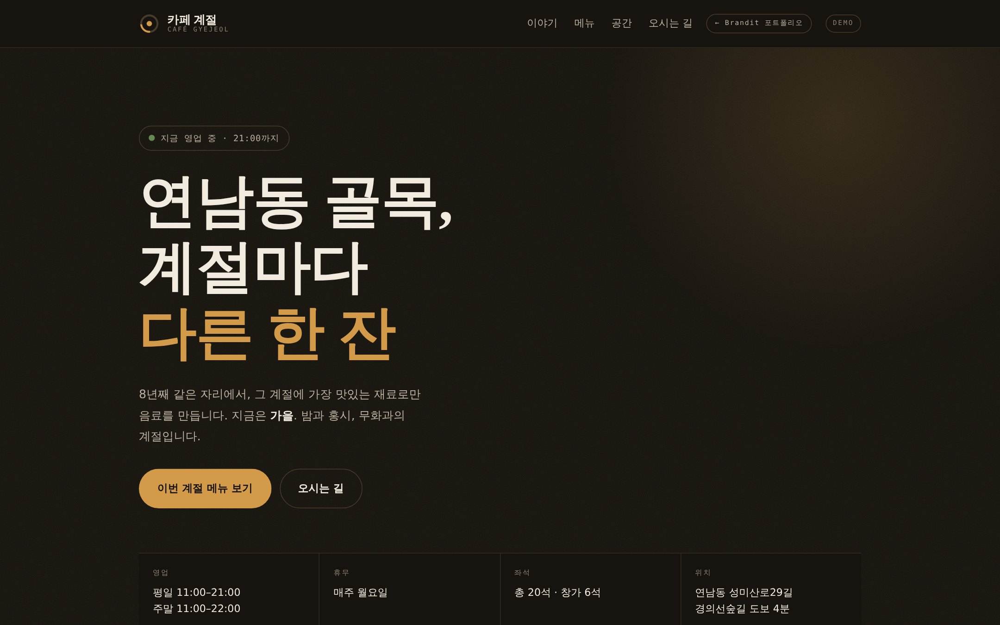

카페 계절
계절마다 메뉴가 바뀌는 골목 카페
작은 가게의 홈페이지에서 손님이 가장 먼저 찾는 정보는 “지금 문 열었나”입니다. 그 한 가지를 첫 화면 맨 위에 두고, 나머지를 그 아래로 정리했습니다.
메뉴판은 계절이 바뀔 때마다 사장님이 새로 만들지 않아도 되도록, 봄·여름·가을·겨울 메뉴를 미리 넣어두고 날짜에 따라 저절로 넘어가게 했습니다.
- ✓영업시간표를 읽어 지금 영업 중인지 마감했는지 현재 시각 기준으로 표시
- ✓계절이 바뀌면 메뉴가 자동으로 교체되어 관리 부담이 없음
- ✓좌석 배치도를 넣어 “자리 있나요” 전화 문의를 줄임
- ✓모바일에서 길찾기 버튼이 화면 하단에 항상 고정